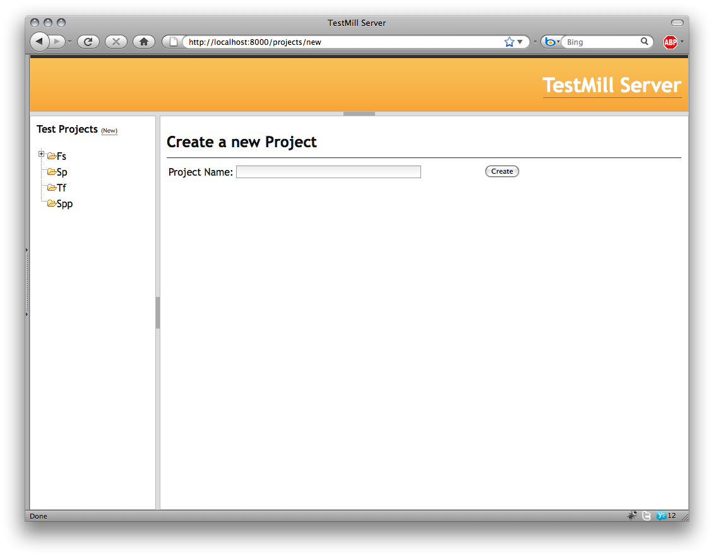

What is it?
- Mission: An easy to use test case management system with hooks for Hudson, issue trackers and your source repository, built in,Django, CouchDB, and jQuery.
- License: Everything is licensed under the Apache License, Version 2.0
- Where: The whole project is open source and hosted on GitHub, enjoy!
- Contact: Feel free to email me with questions at adam at adamchristian dot com
- Contribute: Please fork the code, work on it and log bugs here in the Github Issue Tracker!
Features
- AJAX based test case builder
- Hooks for your ticket tracker for directly accessing tickets
- Hooks for interoperating with Hudson to see results, and run test jobs
- Hooks for pulling in test code for immediate viewing from the same interface
- Uses couchDB to store test projects, making them easily configurable
- Uses the Django admin interface for managing user accounts and server configuration
Installation
- git clone git://github.com/admc/testmill.git testmill
- cd testmill
- python manage.py syncdb (Create a user when it asks)
- python manage.py runserver
- goto localhost:8000/admin unless you ran it elsewhere then go there
- click 'Applications' link and add all the applications (or products) you will be testing
- go back to /admin
- click 'Servers' add one of each available servers (see below for details)
- Go back to the testMill home page, and login!
- Start adding testProjects, link on the left side.
* Server Details
- CouchDB - (REQUIRED) the COUCHDB url needs to be where your couchDB server is running, ex: http://127.0.0.1:5984 (default)
- CouchDB can also be configured in settings.py to point elsewhere on startup instead of getting it from the DB
- Ticket Server - the TICKET url needs to be to your bug/issue/ticket trackers root url, ex: https://trac.slide.com/projects/Slide/ticket/
- Hudson - the HUDSON url needs to be the url to your Hudson install, ex: http://hudson/
- Source Repo - the SOURCE url needs to be the root of your http accessible source repo where your tests are stored, ex: http://myurl.com/mygitrepo
Dependencies
Screen Shots
Homepage

Create a new test project
Test project details
Editing a test project.
Test assertions builder.
Test assertions inline editing.
Automatically link to logged bugs.
View hi-lighted test rode right on the page.
Document your code with comments, and view that separately.
View the status of the jobs automated test runs.